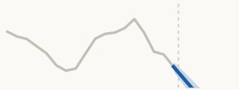
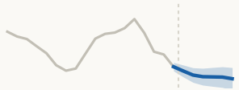
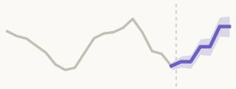

Session 2 · 13:00 to 14:30
Getting the forecasting methods right
Which method for which situation, and how the context you already hold makes any of them better
Udeshi Salgado, Cardiff University, UK
Supervisors: Prof. Bahman Rostami-Tabar, Dr Thanos E Goltsos, Dr Geraint Palmer, Dr Paul Wang
Data Lab for Social Good, Cardiff University, UK
JSI Advisor: Dr Laila Akhlaghi (John Snow, Inc.)
Better Vaccine Demand Forecasting · Maputo, Mozambique · 2 September 2026
Method by method (2 of 3) · machine learning
| Method | What it assumes | Pros | Cons | Can you explain it | Suitable context |
|---|---|---|---|---|---|
|
 LassoRegularised linear |
A linear relationship between predictors and demand, errors that are independent and of constant spread, and a stable bias-variance trade-off. | Drops predictors that do not earn their place, so what is left is short and readable. | Biases the coefficients it keeps, and picks arbitrarily among predictors that move together. | ●●●Easy | Many predictors where you want a sparse, interpretable model. |
 Elastic NetRegularised linear Elastic NetRegularised linear
|
The same linearity, independent errors and constant error spread as Lasso, plus a feature mapping that stays stable over time. | Keeps groups of correlated predictors together instead of discarding all but one. Steadier than Lasso. | Two settings to tune instead of one, which makes cross-validation slower. | ●●●Easy | Many correlated or redundant predictors, where plain regression is unstable. |
|
 Linear averageEnsemble of Lasso and Elastic Net |
The underlying relationships are linear, the members’ errors are uncorrelated, and they share the same feature space. | Smooths out the difference between the two penalties, with nothing to tune. | Inherits every limitation the linear members share, so it still cannot handle curved patterns. | ●●●Moderate | Stabilising forecasts built on many correlated predictors. |
|
 Random ForestTree ensemble |
The mapping from the inputs you feed it to demand is structurally stable, and the individual trees are independent of one another. | Captures non-linear patterns, copes with missing values and outliers, and takes in as much context as you have. | Cannot forecast above anything it saw in training, is the slowest of this family, and is a black box. | ●●●Hard | Many districts at once, complex interactions, plenty of context features. |
 XGBoostTree ensemble XGBoostTree ensemble
|
A stable input-to-demand mapping, corrections that add up across successive trees, and a genuine ordering inside any number-coded category. | Very high accuracy, built-in guards against overfitting, handles gaps natively, and ran in 24 seconds. | Cannot extrapolate beyond the training range, is sensitive to its settings, and is a black box. | ●●●Hard | Large multi-district datasets where speed and accuracy both matter. |
| LightGBMTree ensemble | The same stable mapping and additive corrections, plus a gradient-based loss good enough to decide where each tree grows next. | The lightest and fastest of the family, handles categories natively, and gave the best accuracy per second here. | Cannot extrapolate, overfits smaller datasets easily, and has many settings that interact. | ●●●Hard | High volume data, roughly ten thousand observations or more. |
Any questions or thoughts? 💬

Visit my website for these slides